1. 이번 단원에서 배우는 것
이 단원은 머신러닝이나 데이터 분석으로 들어가기 전에 반드시 익혀야 하는 파이썬의 기본 문법을 다룹니다. 어려운 개념을 한 번에 외우기보다, 주피터 노트북 셀에 직접 입력하고 결과를 확인하면서 이해하는 것이 좋습니다.
print()로 원하는 내용을 화면에 표시합니다.2. 사칙연산
파이썬은 계산기처럼 사용할 수 있습니다. 주피터 노트북 셀에 계산식을 입력하고 실행하면 결과가 바로 표시됩니다. 기본 연산자는 다른 프로그래밍 언어와 비슷합니다.
| 연산 | 기호 | 예시 |
|---|---|---|
| 덧셈 | + | 3 + 2 |
| 뺄셈 | - | 3 - 2 |
| 곱셈 | * | 3 * 2 |
| 나눗셈 | / | 3 / 2 |
| 제곱 | ** | 2 ** 8 |
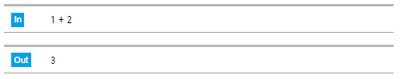
+, -, *, / 기호를 사용합니다.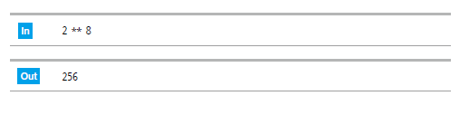
** 기호를 사용합니다.x가 아니라 별표 *를 사용합니다. 제곱은 ^가 아니라 **를 사용합니다.3. 변수
변수는 값을 저장해 두는 이름입니다. 예를 들어 x = 10이라고 쓰면, 앞으로 x라는 이름을 사용할 때 10이라는 값을 다시 꺼내 쓸 수 있습니다.
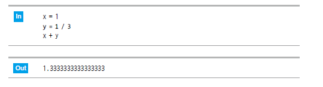
변수명 작성 규칙
- 알파벳, 숫자, 밑줄(
_)을 사용할 수 있습니다. - 숫자로 시작할 수 없습니다. 예:
1data는 잘못된 이름입니다. - 대문자와 소문자를 구분합니다.
data와Data는 서로 다른 변수입니다. - 의미 있는 이름을 사용하는 것이 좋습니다. 예:
age,price,score
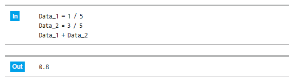
4. 자료형
자료형은 데이터의 종류입니다. 파이썬은 값이 정수인지, 실수인지, 문자열인지에 따라 다르게 처리합니다. 데이터 분석에서는 컬럼의 자료형을 이해하는 것이 매우 중요합니다.
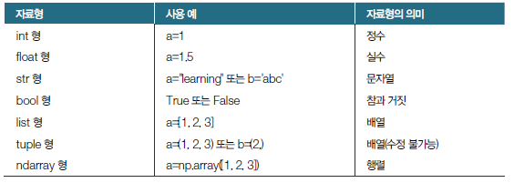
| 자료형 | 의미 | 예시 |
|---|---|---|
int | 정수 | 100 |
float | 실수 | 100.1 |
str | 문자열 | "Python" |
list | 수정 가능한 여러 값의 묶음 | [1, 2, 3] |
tuple | 수정 불가능한 여러 값의 묶음 | (1, 2, 3) |
type()으로 자료형 확인하기
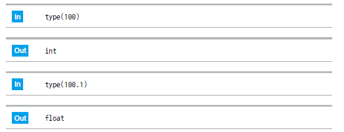
type() 함수는 값이나 변수의 자료형을 확인할 때 사용합니다."1000"처럼 문자열이면 계산 전에 숫자형으로 바꿔야 합니다.5. 문자열
문자열은 문자 데이터를 의미합니다. 파이썬에서는 작은따옴표 또는 큰따옴표로 감싸면 문자열로 인식합니다.
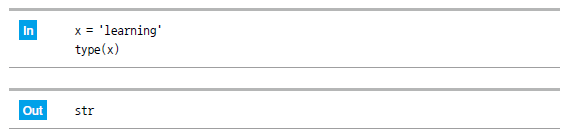
'Hello' 또는 "Hello"처럼 따옴표로 감싸서 표현합니다."Python'처럼 섞어 쓰면 오류가 발생합니다.6. print 문
주피터 노트북에서는 마지막 줄의 값이 자동으로 표시되지만, 여러 값을 원하는 형식으로 출력하려면 print()를 사용하는 것이 좋습니다.
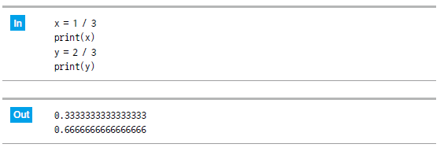
print()는 코드 실행 중 확인하고 싶은 값을 화면에 출력할 때 자주 사용합니다.문자열과 숫자 함께 출력하기
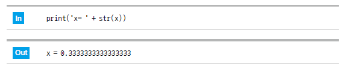
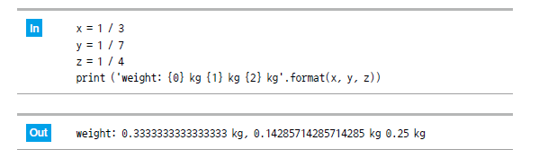
format()을 사용하면 여러 값을 원하는 위치에 넣어 출력할 수 있습니다.7. list
리스트는 여러 데이터를 하나의 이름으로 묶어 관리할 때 사용합니다. 대괄호 [] 안에 값을 쉼표로 구분해서 넣습니다.
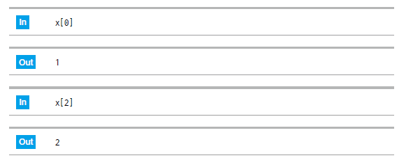
x[0]으로 가져옵니다.리스트 값 수정하기
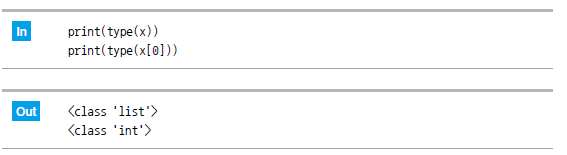
2차원 리스트
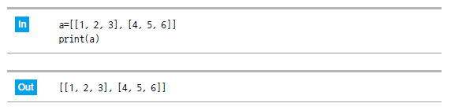
리스트 길이와 range
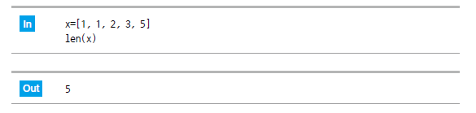
len()은 리스트에 값이 몇 개 들어 있는지 확인할 때 사용합니다.8. tuple
튜플은 리스트와 비슷하게 여러 값을 묶는 자료형입니다. 하지만 리스트와 달리 한 번 만든 후에는 요소를 수정할 수 없습니다. 괄호 ()를 사용해 표현합니다.
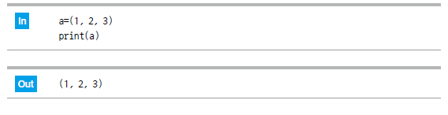
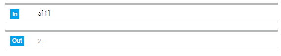
[]와 인덱스를 사용합니다.길이가 1인 튜플
튜플에서 특히 주의할 점은 길이가 1인 튜플입니다. (1)은 튜플이 아니라 숫자 1로 인식됩니다. 길이가 1인 튜플은 (1,)처럼 쉼표를 붙여야 합니다.
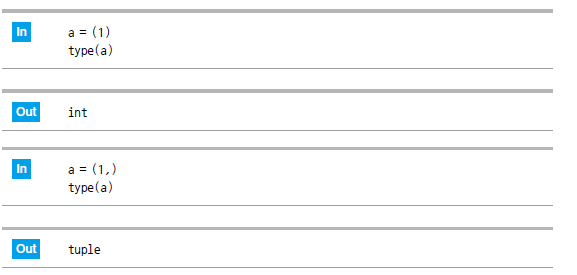
(1,) 형태로 작성합니다.9. 실습 체크리스트
- 파이썬으로 사칙연산과 제곱 계산을 할 수 있다.
- 변수를 만들고 계산에 사용할 수 있다.
type()으로 자료형을 확인할 수 있다.- 문자열을 따옴표로 만들고
print()로 출력할 수 있다. - 리스트를 만들고 인덱스로 값을 가져오거나 수정할 수 있다.
- 튜플과 리스트의 차이를 설명할 수 있다.
if, 반복문 for, enumerate, 함수와 초보자 오류 읽기를 다룹니다.10. 종합 실습 문제
1. 문제 출제
작은 카페의 하루 판매 데이터를 이용해 메뉴별 매출과 총매출을 계산하는 프로그램을 작성해 보세요.
아래 조건을 모두 만족해야 합니다.
- 카페 이름은 문자열 변수에 저장합니다.
- 메뉴 이름 3개는 튜플에 저장합니다.
- 메뉴 가격 3개는 리스트에 저장합니다.
- 메뉴별 판매 수량 3개는 리스트에 저장합니다.
- 각 메뉴의 매출은
가격 × 판매 수량으로 계산합니다. - 총매출과 메뉴당 평균 매출을 계산합니다.
print()와format()을 사용해 결과를 보기 좋게 출력합니다.
2. 문제 해결에 필요한 개념 요약
| 개념 | 이 문제에서 쓰는 방법 |
|---|---|
| 문자열 | 카페 이름과 출력 문장을 저장하거나 화면에 표시합니다. |
| 변수 | 가격, 수량, 메뉴별 매출, 총매출, 평균 매출을 저장합니다. |
| 리스트 | 가격과 판매 수량처럼 나중에 바뀔 수 있는 값을 묶어 저장합니다. |
| 튜플 | 메뉴 이름처럼 고정된 값을 묶어 저장합니다. |
| 인덱스 | menus[0], prices[0], counts[0]처럼 같은 위치의 데이터를 연결합니다. |
| 사칙연산 | 곱셈으로 메뉴별 매출을 구하고, 덧셈과 나눗셈으로 총매출과 평균 매출을 구합니다. |
| 출력 | print()와 format()으로 결과를 읽기 좋게 출력합니다. |
3. 수도코드
4. 실행 예시
아래 값으로 프로그램을 작성해 보세요.
| 항목 | 예시 값 |
|---|---|
| 카페 이름 | 파이썬 카페 |
| 메뉴 | 아메리카노, 카페라떼, 샌드위치 |
| 가격 | 4500, 5000, 6500 |
| 판매 수량 | 12, 8, 5 |
작성할 코드 예시는 다음과 같습니다.
예상 출력값은 다음과 같습니다.